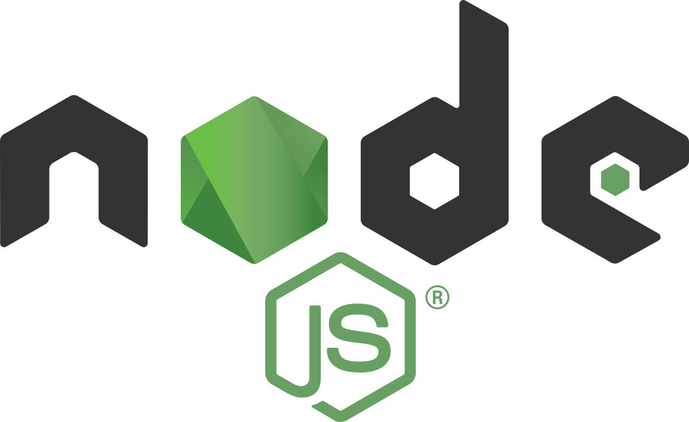

Skills

HTML

CSS

Javascript

NodeJS

Bootstrap
Halo semuanya, nama saya Andrean Valdy Wijaya, saya seorang programmer Fullstack MERN dan saya berasal dari Gresik, Jawa Timur. Saya sudah menekuni bidang programming sejak masih SMK di Raden Paku Wringinanom dengan jurusan Teknik Komputer dan Jaringan.
Tugas saya adalah membangun situs web yang menarik dan ramah serta membuat semua orang yang memakai jasa saya sangat puas. Saya tidak pernah berhenti belajar teknologi baru karena zaman sekarang teknologi semakin berkembang.
HTML
CSS
Javascript
NodeJS
Bootstrap